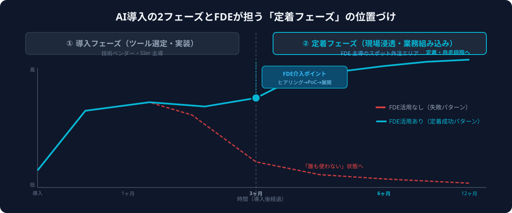
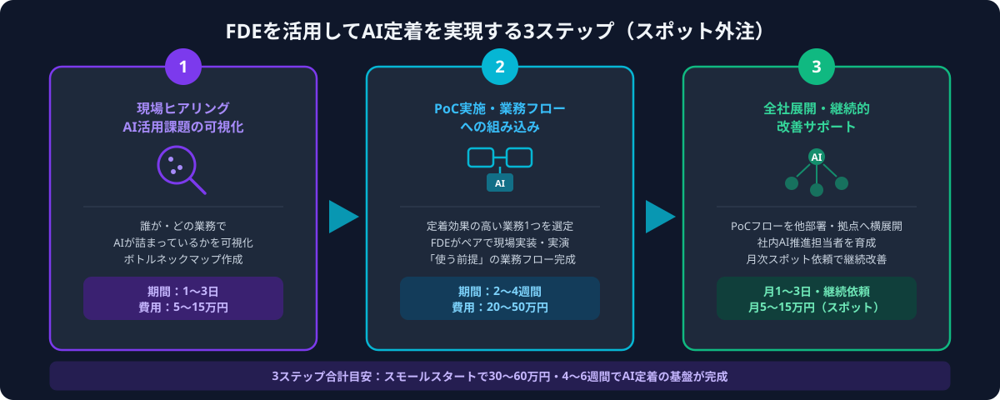

なぜAI導入は「定着フェーズ」で失敗するのか
技術知識と現場業務の両方を理解し、AIを「現場で動かし続ける」ことに特化した新職種。単なる開発エンジニアと異なり、現場スタッフへのヒアリング・業務フローへの組み込み・トラブルシューティング・改善提案まで一貫して担当する。AI導入後の「誰も使わない問題」を解消する最前線の人材として、2026年に急速に普及している。
AI導入プロジェクトには「導入フェーズ」と「定着フェーズ」の2段階があります。多くの企業がつまずくのは後者です。典型的な失敗パターンは以下の通りです。
- 業務フローに組み込まれていない：ツールは導入されたが「使うかどうかは個人の判断」という状態のまま。日常業務の中に「使う前提のフロー」が設計されていないため、忙しいときに誰も使わなくなる
- 初期の「手間」で離脱する：AIツールは使い始めの数日間、操作に慣れるまでいつもより時間がかかることが多い。この「一時的な手間の増加」に耐える前に離脱する現場スタッフが続出する
- 技術と現場の橋渡し人材がいない：「このツールで何ができるか」を現場スタッフに教え、「この業務でこう使えば効果が出る」と具体的に示せる人材がいない。ベンダーは開発・サポートが専門で、現場業務への落とし込みは範囲外とするケースが多い
- トラブル時の対応が遅い：思い通りの結果が出なかったとき、誰に相談すればいいか分からず「使うのをやめた」という判断が積み重なる
これらはすべて「技術と業務の橋渡し人材の不在」から生じる問題です。FDEはまさにこの役割を担う専門家であり、AI定着の成否を左右する存在です。大手企業ではFDEを正社員として採用するケースが増えていますが、中小企業がFDEを常駐させることは現実的ではありません。スポット外注でFDEを「定着が必要なタイミングだけ」活用するアプローチが、コストと効果のバランスに優れています。

FDEを活用してAI定着を実現する3ステップ
ステップ1｜現場ヒアリング・AI活用課題の可視化をFDEに依頼する
「なぜ使われていないのか」を正確に把握せずに対策を打っても効果は出ません。最初のステップは、FDEが現場担当者に直接ヒアリングし、「どのツールがどの業務フローのどの場面で詰まっているか」を可視化することです。
FDEが実施する現場ヒアリングの内容
- ツール別の利用実態調査：導入済みのAIツールそれぞれについて、誰がどのくらいの頻度で使っているかを定量的に把握する。ログデータと現場インタビューを組み合わせて実態を把握
- 「使わない理由」の深掘りヒアリング：「忙しいから」「難しいから」という表面的な回答の背後にある本質的な障壁（業務フローとの接続がない・出力品質への不信・上司の評価基準が変わっていない 等）を特定する
- 定着効果が高い業務の特定：全業務のうち、AIを使い始めた場合に最も早く「効果実感」が得られる業務（繰り返し頻度が高い・手戻りが多い・個人差が大きい）を選定する
- ボトルネックマップの作成：現在の業務フロー図の上に「AIが使えるはずなのに使われていない箇所」を重ねたマップを作成し、優先改善ポイントを可視化する
① AIツールを積極的に試したが途中でやめてしまった「挫折経験者」
② 日常業務の繰り返し作業が多い現場スタッフ（恩恵を受けやすい層）
③ チームのAI活用状況を把握しているチームリーダー・係長クラス
④ ツールを全く使っていない「無関心層」（なぜ興味を持てないかの理由が重要）
このステップのスポット外注費用目安は5〜15万円・1〜3日です。FDEが現場に入ることで、情報システム部門やコンサルタントが実施する通常のヒアリングでは見えてこない「現場レベルの詰まりポイント」が明確になります。結果としてボトルネックマップと優先改善リストが完成し、次のステップの方向性が定まります。
ステップ2｜最優先業務でPoC（小規模試験）を実施し業務フローに組み込む
ステップ1で特定した「定着効果が最も高い業務」を1つ選び、FDEが現場スタッフとペアを組みながらPoCを実施します。このフェーズのポイントは「全社一斉展開」ではなく「1業務・少人数」で確実に成功体験を作ることです。
FDEが担うPoC実施の内容
- 業務フローへの「AI使用前提」の組み込み：対象業務の手順書・チェックリストを書き直し、「このステップでAIを使う」と明示する。任意ではなく標準手順にすることが定着の鍵
- ペア稼働によるリアルタイムサポート：FDEが現場スタッフの隣でAIの使い方を見せながら一緒に作業する。「こういうプロンプトを使うとうまくいく」「この出力はこう判断する」を実演形式で共有
- つまずきパターンの収集と即時解消：PoC中に出てくる「これが分からない」「この操作が難しい」を逐一記録し、その場で解決策を提供。蓄積されたつまずきパターンはFAQマニュアルに変換する
- 効果測定の仕組み設計：対象業務の処理時間・エラー率・担当者の主観的な労力感などを数値化し、PoC前後で比較できる測定の仕組みを設計・実施する
① 週3回以上繰り返す業務（練習回数が多いほど定着が速い）
② 現在の手作業で30分以上かかる業務（AIによる時短効果が体感しやすい）
③ 品質のばらつきが担当者によって大きい業務（AIによる均質化の恩恵が分かりやすい）
このステップのスポット外注費用目安は20〜50万円・2〜4週間です。PoCが成功し「この業務はAIを使う」という標準フローが完成すると、参加した現場スタッフが「社内AI推進者」になります。この少数の成功体験者が次のステップの全社展開を引っ張る存在になります。

ステップ3｜全社展開・継続的な改善サポートをFDEにスポット依頼する
PoC成功後は「再現性の確保」がテーマです。1つの業務・少数チームで実証したAI活用フローを、他部署・他拠点・新入社員にも同じように定着させます。FDEをスポット外注で月次・四半期ごとに呼び戻し、継続的な改善サポートを依頼します。
FDEが担う全社展開・継続サポートの内容
- 社内展開用マニュアル・研修資料の整備：PoCで蓄積したつまずきパターン・効果的なプロンプト集・業務別のAI活用手順書をドキュメント化し、他部署でも独立して使えるセット資料を作成する
- 社内「AI推進担当者」のスキルトランスファー：PoC成功者（社内AI推進者）に対して、他部署での展開を担える知識・スキルをFDEが教える。FDEが社内に「分身」を育てることで、外注依存を段階的に減らす
- 新規業務へのAI活用拡張：最初のPoCで対象にしなかった業務への横展開を計画的に実施する。月次・四半期でFDEを呼び戻してアセスメント→業務フロー更新→効果測定のサイクルを回す
- AIツール・モデルのアップデート対応：ChatGPT・Claudeなどのモデルバージョンアップや新機能リリースに合わせて、既存の業務フローや社内ルールをFDEが適時アップデートする
① 「任意利用」ではなく「業務フローの標準手順」として組み込む（オプトインではなくデフォルト化）
② 展開する部署ごとに「社内AI推進担当者」を1名指名し、FDEが直接スキルを移転する
③ 月次でAI活用状況をダッシュボード化し、使われている業務・使われていない業務を可視化し続ける
継続的な改善サポートのスポット外注費用は月5〜15万円・月1〜3日稼働が目安です。フルタイムでFDEを雇用する場合（月50〜100万円〜）と比べると、スポット外注は費用を大幅に抑えながら専門性を継続的に活用できます。AI定着のサイクルが社内に根付いてくれば、スポット依頼の頻度を四半期に1回程度まで落とすことも可能です。
費用・期間の目安（2026年）
FDEをスポット外注で活用してAI定着を実現するための費用感は、対象業務の範囲・ツール数・現場スタッフ数によって変わります。以下は2026年の市場水準をもとにした目安です。
① スモールスタート（1業務・1チーム・PoC完了まで）：4〜6週間、費用 30〜60万円
ヒアリング5〜15万円＋PoC実施20〜40万円＋マニュアル整備5〜10万円
② 標準規模（3〜5業務・複数部署展開・社内推進者育成含む）：2〜3ヶ月、費用 80〜150万円
PoCを段階的に複数業務で実施し、部署ごとの社内推進者を育成
③ 大規模展開（全社・多拠点・複数AIツール対応）：3〜6ヶ月、費用 200〜400万円
拠点別PoCと展開サポートを並行実施、AIガバナンスルール策定を含む場合
継続的な改善サポート（展開完了後）：月5〜15万円（月1〜3日稼働）
新業務への横展開・モデルアップデート対応・活用状況レビュー
コンサル会社や大手SIerに依頼した場合と比較すると、スポット外注でFDEを活用することで総費用を30〜50%程度抑えられるケースが多いです。理由は、大手ベンダーは管理費・間接費が積み上がりやすい一方、スポット外注はFDEが直接稼働する時間分だけを依頼できるためです。また、AIツール・モデルが急速に進化する2026年においては、「必要なタイミングで最新知識を持つFDEを呼ぶ」スポット外注の柔軟性が、固定メンバーでの内製化より優れている局面も多くあります。
まず「ステップ1のみ（現場ヒアリング・課題可視化・5〜15万円）」をスポット依頼し、どの業務を優先すべきかを確認してからPoCスコープを決定するアプローチがリスクを最小化できます。
ANKENでFDEを探す流れ
ANKENはAI開発・システム開発のスポット外注に特化したマッチングサービスで、現場業務への組み込み経験を持つFDE的スキルのエンジニアが複数登録しています。AI導入後の定着支援・現場でのハンズオンサポート・社内推進者育成まで対応できる人材を紹介しています。
- 無料相談（30分〜）：導入済みのAIツール・現在の利用状況・定着させたい業務・社内体制をヒアリングし、FDEに依頼すべき範囲と優先順位を整理します。「何から手をつければいいか分からない」状態からご相談いただけます
- FDEのマッチング：業界・業務領域・使用しているAIツール（ChatGPT・Claude・Gemini等）に合ったFDE経験者を1〜3営業日以内にご提案します
- ヒアリングフェーズからスタート：まず1〜3日のスポットで現場ヒアリングだけを依頼し、課題を明確にしてからPoC・展開フェーズに進むことが可能です。段階的な発注でリスクを分散できます
- フェーズ単位の継続依頼：ヒアリング→PoC→展開→継続改善の各フェーズをスポット単位で依頼でき、AI定着の進捗に合わせて柔軟に調整できます
「AIを入れたが現場で使われていない」「どのツールから定着させるべきか分からない」という状態からでも、ANKENへの無料相談から課題整理と優先対応業務の特定を始められます。まずは30分の相談からお気軽にご連絡ください。
よくある質問
- Q. FDEと通常のAIコンサルタントはどう違いますか？
- A. AIコンサルタントは戦略立案・ツール選定が主な役割ですが、FDEは現場に入って実際に業務フローへ組み込み・スタッフへの実演・トラブル対応まで担います。定着フェーズには現場実装力が重要です。
- Q. AI定着支援のスポット外注はどのくらいの期間で効果が出ますか？
- A. PoC（小規模試験）が2〜4週間で完了し、参加スタッフが日常的にAIを使い始めるまでの目安は4〜8週間です。全社展開まで含めると2〜3ヶ月が現実的な目標期間です。
- Q. まだAIツールを何も導入していない段階でもFDEに依頼できますか？
- A. はい。ツール選定から業務フロー設計・導入・定着まで一貫してFDEに依頼することが可能です。既にツールがある場合は「定着フェーズのみ」の依頼も対応しています。
まとめ
AI定着に失敗する企業がFDEをスポット外注で活用する手順は、①現場ヒアリング・AI活用課題の可視化（5〜15万円）→②最優先業務でPoC実施・業務フローへの組み込み（20〜50万円）→③全社展開・継続的改善サポートのスポット依頼（月5〜15万円）の3ステップです。「AIを入れたが誰も使っていない」状態は、ツールや現場スタッフの問題ではなく、技術と業務を橋渡しする人材の不在が原因です。FDEをスポット外注で活用することで、正社員雇用や大手コンサル委託と比べて大幅にコストを抑えながら、AI定着を現場レベルで実現できます。
「どのAIツールから定着させるべきか整理できていない」「現場スタッフが使いこなせるか不安」という段階でも、ANKENへの無料相談からFDE活用の優先順位と進め方を整理できます。まずは30分の相談からお気軽にご連絡ください。